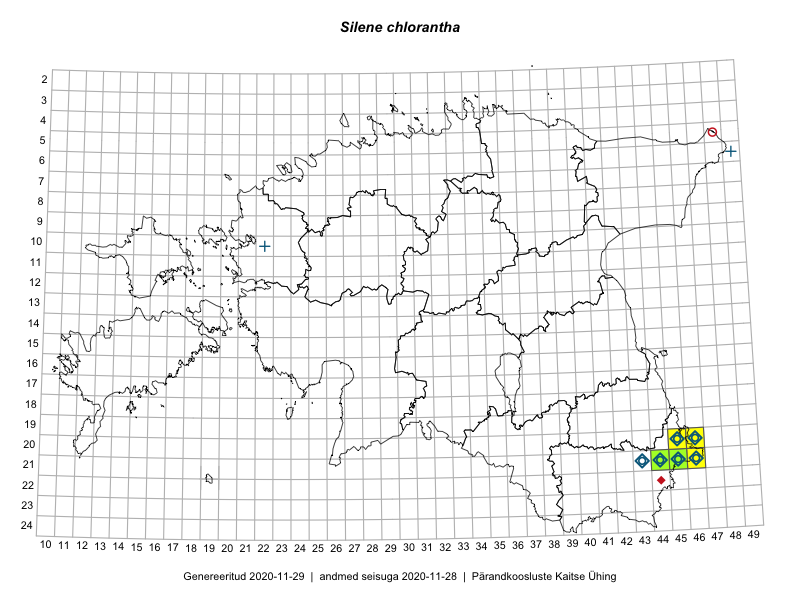

Silene chlorantha
Uuendatud: 2016-12-07
Kaardile koondatud taksonid: Silene chlorantha (Willd.) Ehrh.

Kaart põhineb 6 vaatlusel. Taime on leitud 1 ruudust.
| Ruut | Vaatleja(d) | Vaatlusaeg | Kirje tüüp | Viide andmebaasikirjele |
|---|---|---|---|---|
| 21-45 | Rein Kalamees, Kersti Püssa | 2015-05-28 | ruut/ala | vaata PlutoFis |
| 21-45 | Toomas Kukk, Kersti Tambets, Sten Mander, Janika Sammasto, Timo Luhamäe | 2014-07-30 | ruut/ala | vaata PlutoFis |
| 21-45 | Rein Kalamees, Kersti Püssa | 2015-07-15 | ruut/ala | vaata PlutoFis |
| 21-45 | Toomas Kukk, Timo Luhamäe, Kersti Tambets, Sten Mander, Janika Sammasto | 2014-07-30 | ruut/ala | vaata PlutoFis |
| 21-45 | Toomas Kukk, Tiit Hallikma, Johannes Kõdar | 2016-06-14 | ruut/ala | vaata PlutoFis |
| 21-45 | Tiit Hallikma, Toomas Kukk, Johannes Kõdar | 2016-06-14 | punkt | vaata PlutoFis |